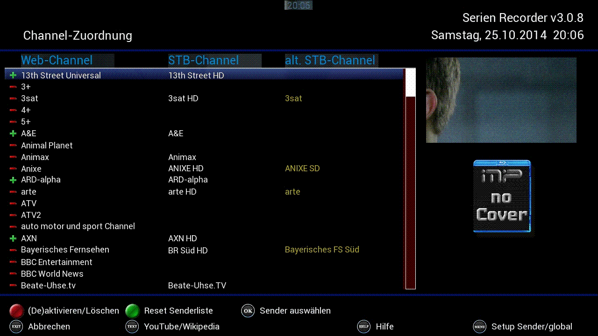
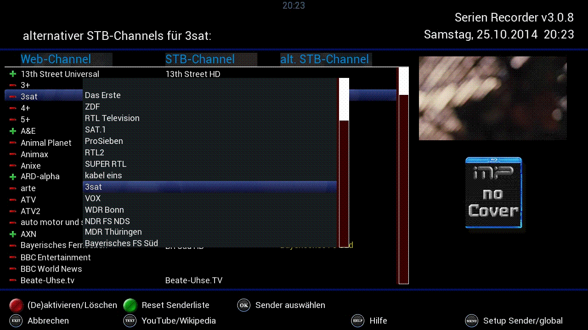

|
3 Die
Sender-Zuordnung
Damit der
SerienRecorder überhaupt
funktioniert, müssen Sender zugewiesen werden, d.h. es muss
eine
Verbindung zwischen den Sendern hergestellt werden, die wunschliste.de
kennt, und denen die mit dem Receiver empfangen werden können
bzw.
für die Timer erstellt werden sollen.

Fig.3.1: Die Sender-Zuordnung
Die
Sender-Zuordnung ist
dreispaltig aufgebaut. Die linke Spalte zeigt die Sender die von
wunschliste.de geliefert werden (Web-Channel), die mittlere Spalte
zeigt den Sender des Receivers, der dem entsprechenden Web-Channel
zugewiesen wurde, und die rechte Spalte eine mögliche
alternative
Zuweisung (z. B. die SD Variante des Senders, falls der HD Sender
nicht verfügbar ist) – dazu muss die Option
„Bouquets auswählen“
in den globalen
Einstellungen aktiviert sein.
Über
die rote
Taste lassen sich
zugewiesene Sender aus- bzw. einschalten (dargestellt durch das Minus-
und Plus-Symbol). Ein langes
Drücken der roten
Taste löscht den Sender endgültig aus der Liste
(natürlich nur im SerienRecorder, die Favoriten-Liste selbst
bleibt unangetastet).
Beim
ersten Start sollte man also
zunächst die Zuordnung vornehmen, dazu wählt man
einen Sender
aus, den man empfangen kann, im Beispiel (siehe Fig.2.3) ist das
„3sat“ und drückt die OK Taste. Es
öffnet sich eine
Liste mit den Sendern, die der Receiver empfangen kann (die
Favoriten-Liste), und der
entsprechende Sender kann ausgewählt werden.

Fig.3.2: Die Sender-Zuordnung
Die Auswahl wird mit der OK
Taste bestätigt. Hat man in den globalen
Einstellungen
festgelegt, dass alternative Bouquets verwendet werden sollen,
öffnet sich jetzt das 2. Popup-Fenster für die
Auswahl des
alternativen Senders (s. Kapitel
3.1). Andernfalls kann die Zuordnung für den
nächsten Web-Channel vorgenommen werden.
3.1
Die Verwendung von alternativen Channels
Hier kann zusätzlich noch ein
alternativer
Sender gewählt werden. Falls beim Auto-Check ein Timer
aufgrund
von Konflikten oder nicht ausreichender Anzahl von Tunern nicht
erstellt werden kann, dann versucht der SerienRecorder den
entsprechenden Timer für diesen alternativen Sender zu
erstellen.

Fig.3.3:
Die Sender-Zuordnung
Die Auswahl wird mit der OK
Taste bestätigt, und man kann die Zuordnung für den
nächsten Web-Channel vornehmen.
3.2
Die Sender-Einstellungen
Für
jeden Sender lassen sich über die MENU Taste
individuelle Einstellungen vornehmen:
Fig.3.4: Die Sender-Einstellungen
Individuelle
Timervorlauf- bzw. Timernachlauf Zeiten lassen sich hier definieren.
Wenn man weiß,
dass der Sender sehr unzuverlässige Zeitangaben hat, dann
lässt
sich der Wert hier speziell für diesen Sender
erhöhen, bzw.
natürlich auch verringern, wenn der Sender sich sehr genau an
die
Start- und Endzeiten hält. Ist das VPS Plug-In installiert,
kann VPS
für den Sender aktiviert werden, dadurch entscheidet der
Sender wann
genau eine Aufnahme startet – alle
öffentlich-rechtlichen Sender
(z. B. ARD, ZDF usw.) unterstützen VPS.
|